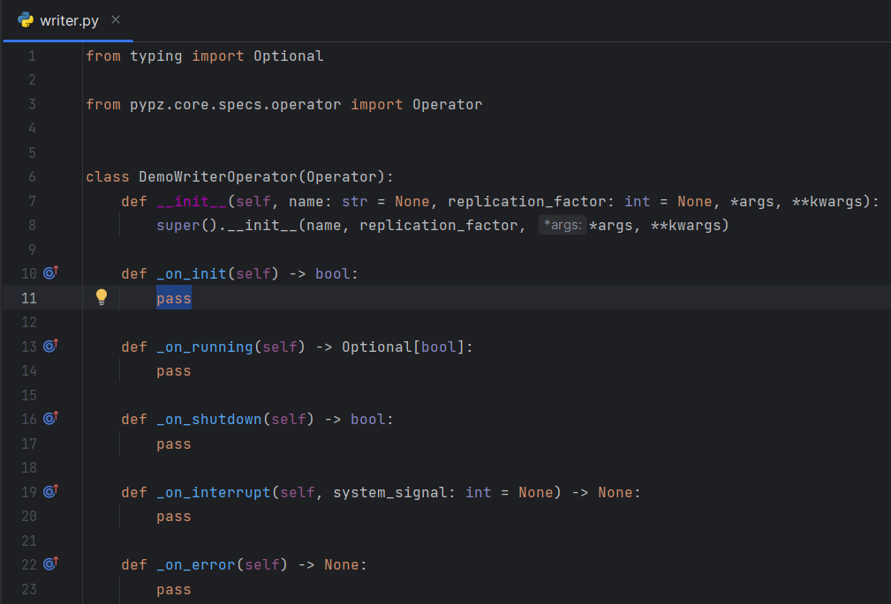
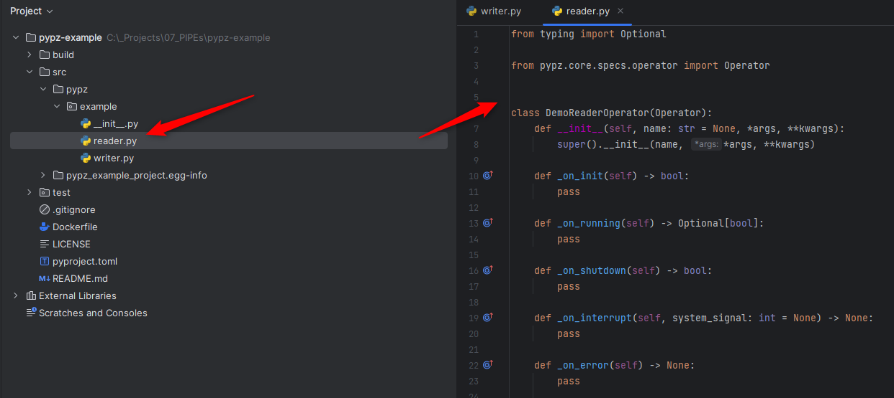
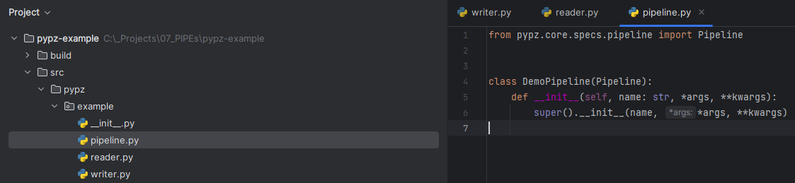
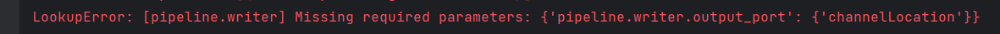
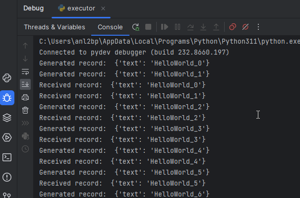
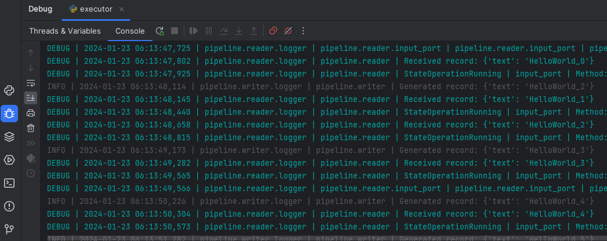
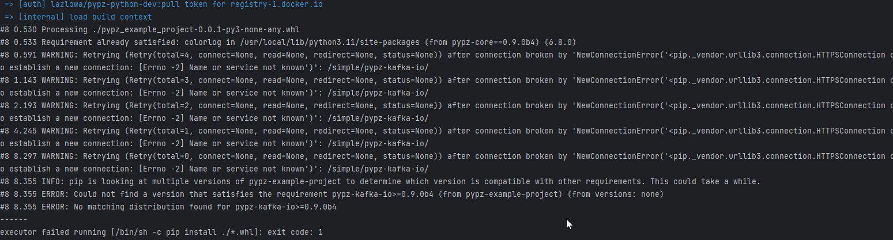

How to create a pipeline
What You Will Learn
The basics of pypz in python
How to model operators and pipelines in pypz
How to execute an operator locally w/o docker and kubernetes
How to build and push a docker image of your implementation
How to deploy a pipeline to Kubernetes
How to sniff the running pipelines
How to replicate operators
Note
TLDR: you can find the completed exercise along with other examples in the example repository
What You Will Need
Python 3.11+
an IDE of your choice, however PyCharm CE has been used for this guide
access to a Kafka cluster or you can simply use the confluent image “confluentinc/confluent-local image” to start Kafka locally
(optional) access to a Kubernetes Cluster (you can use Kind locally)
(optional) access to a Docker image registry (not necessary if Kind used)
Setting Up The Project
Create a project based on this template
Open with your IDE of your choice
Setup required dependencies in the pyproject.toml file
Install the dependencies and the current project in editable mode:
pip install -e .
The Plan
We are going to create the following “Hello world” pipeline:
Demo Pipeline
The DemoWriterOperator will produce “Hello world” messages and will transmit them over Kafka to the DemoReaderOperator.
DemoWriterOperator
Create a python file with the name
writer.pyCreate a class with name
DemoWriterOperatorImport the necessary modules (in PyCharm either Ctrl+Space, while typing or Alt+Enter over the importable)
Generate the proper constructor (in PyCharm Alt+Insert > Override methods > select __init__ > Ok)
Generate the abstract methods (in PyCharm Alt+Insert > Implement methods > select all methods > Ok )
Once you are done, you should see something similar:
Check Models section for more details on the methods.
Output Schema
The builtin kafka ports (KafkaChannelInputPort,
KafkaChannelOutputPort)
are sending records in Avro
format, hence we need to define the schema for the records.
AvroSchemaString = """
{
"type": "record",
"name": "DemoRecord",
"fields": [
{
"name": "text",
"type": "string"
}
]
}
"""
This schema will expect a record with the key “text” in type string.
__init__()
Operators can be enhanced by plugins. For example, the Input-/
OutputPortPlugins enable the operators
to transfer data to and from each other. Hence, we need to create the
KafkaChannelInputPort plugin in the ctor of the operator.
...
AvroSchemaString = """
{
"type": "record",
"name": "DemoRecord",
"fields": [
{
"name": "text",
"type": "string"
}
]
}
"""
def __init__(self, name: str = None, *args, **kwargs):
super().__init__(name, *args, **kwargs)
self.output_port = KafkaChannelOutputPort(schema=DemoWriterOperator.AvroSchemaString)
self.output_record_count: int = 0
...
Additionally, we create a variable to track, how many records have been sent already.
_on_init()
Check Methods for the signature explanation.
This method will be called after services have been started, resources have been created and port plugins have been initialized.
Since we are not implementing any logic here for this example, simply return True.
def _on_init(self) -> bool:
return True
Warning
There is an explicit type checking of the expected return values during execution, so
ALWAYS mind the expected return values and their types! If you would return None here, you would get
an error due to the unexpected return value type.
_on_shutdown()
Check Methods for the signature explanation.
This method will be called before port plugin are stopped, resources deleted and services shut down.
Since we are not implementing any logic here for this example, simply return True.
def _on_shutdown(self) -> bool:
return True
_on_interrupt(system_signal)
This method is called, if a system signal has been caught like SIGINT, SEGTERM etc. You can use it to stop your internal logic (e.g., loops), which is not accessible by pypz. It does not expect any return value and we are not using it for this example, hence you can leave it.
_on_error()
This method is called, if an exception is raised during execution. You can use it to perform a reaction to an error.
_on_running()
Check Methods for the signature explanation.
This method is called after the _on_init() has successfully finished and before _on_shutdown(). It runs until:
the method returns True
the method returns None and there is no more records to be received on any of the InputPortPlugins
The following logic is implemented:
We create the record according to the defined schema
For visualization purposes, we print it onto stdout
We invoke the send method of the output_port
If 30 records were sent, then we terminate
def _on_running(self) -> Optional[bool]:
record_to_send = {
"text": "HelloWorld_" + str(self.output_record_count)
}
print("Generated record: ", record_to_send)
self.output_port.send([record_to_send])
self.output_record_count += 1
if 30 == self.output_record_count:
return True
time.sleep(1)
return False
DemoReaderOperator
Create a python file with the name
reader.pyCreate a class with name
DemoReaderOperatorRepeat the steps 3-5 from the DemoWriterOperator
Once done, you should see something similar:
Input schema
Since we are reading records from Kafka sent by the DemoWriterOperator, we need to have the same schema.
AvroSchemaString = """
{
"type": "record",
"name": "DemoRecord",
"fields": [
{
"name": "text",
"type": "string"
}
]
}
"""
__init__()
For the reader operator we need to define the kafka input port.
...
AvroSchemaString = """
{
"type": "record",
"name": "DemoRecord",
"fields": [
{
"name": "text",
"type": "string"
}
]
}
"""
def __init__(self, name: str = None, *args, **kwargs):
super().__init__(name, *args, **kwargs)
self.input_port = KafkaChannelInputPort(schema=DemoReaderOperator.AvroSchemaString)
...
_on_running()
In this method we are simply retrieving the records and printing them onto stdout.
def _on_running(self) -> Optional[bool]:
records = self.input_port.retrieve()
for record in records:
print("Received record: ", record)
return None
Note
Notice that the method returns with None. This will force pypz to automatically check, if there are records available on any input ports. In this example it is equivalent to:
return not self.input_port.can_retrieve()
DemoPipeline
Create a new file with the name
pipeline.pyCreate a class with the name
DemoPipelineImport the modules
Generate the constructor
Note that we don’t override or implement any other methods for the pipeline.
Once you are done, you should see something like this:
__init__()
Since we are modelling the pipeline in the code, we need to define the operators and its connections:
from pypz.core.specs.pipeline import Pipeline
from pypz.example.reader import DemoReaderOperator
from pypz.example.writer import DemoWriterOperator
class DemoPipeline(Pipeline):
def __init__(self, name: str, *args, **kwargs):
super().__init__(name, *args, **kwargs)
self.reader = DemoReaderOperator()
self.writer = DemoWriterOperator()
self.reader.input_port.connect(self.writer.output_port)
Note
Notice that we did not specify the name of the operator instances. In this case pypz will use the name of the variables as instance names. Check Metaclass for more information.
Congratulations, you created your first pipeline in pypz!
[Optional] Kafka Cluster
Since we are using Kafka port plugins in the example, you will need access to a Kafka cluster. Should it be not the case, you can start a cluster locally from the corresponding confluent image:
docker run -it -d --rm -p 9092:9092 confluentinc/confluent-local
Then you can access the broker via localhost:9092.
Local execution
In this section you will learn, how to execute your pipeline locally. First, we create an additional file
with the name execute.py. This will be a script file.
The following logic is implemented:
Create the DemoPipeline object
Create the
PipelineExecutorobject with the pipeline as ctor argumentStart the pipeline execution
Shutdown the pipeline execution
from pypz.executors.pipeline.executor import PipelineExecutor
from pypz.example.pipeline import DemoPipeline
if __name__ == "__main__":
pipeline = DemoPipeline("pipeline")
executor = PipelineExecutor(pipeline)
executor.start()
executor.shutdown()
Note
Notice that we specified the name of the pipeline here. The reason is that automatic name deduction from
variable names is working only within pypz Instance
context i.e., if the caller is a type of the Instance.
Check Metaclass for more information.
If you try to run your script now, you will get the following error:
This is because the port plugins have not been configured with the Kafka broker location. To do this, we need to set the following instance parameters:
from pypz.executors.pipeline.executor import PipelineExecutor
from pypz.example.pipeline import DemoPipeline
if __name__ == "__main__":
pipeline = DemoPipeline("pipeline")
pipeline.set_parameter(">>channelLocation", "localhost:9092")
executor = PipelineExecutor(pipeline)
executor.start()
executor.shutdown()
Note
Notice that we configured the channels in the port plugins directly and we used two-level, excluding cascading paremters.
If you start the executor now, you need to see something like this:
Notice that we used the print method to show some information on stdout, however there is a Logging system
in pypz, which allows to send log messages. For this, we need to enhance our operators by
LoggerPlugins.
As next, we will add the DefaultLoggerPlugin
to each operators and we will modify the code to use the
new logger. The DefaultLoggerPlugin sends the logs to stdout.
...
def __init__(self, name: str = None, *args, **kwargs):
super().__init__(name, *args, **kwargs)
self.output_port = KafkaChannelOutputPort(schema=DemoWriterOperator.AvroSchemaString)
self.output_record_count: int = 0
self.logger = DefaultLoggerPlugin()
...
def _on_running(self) -> Optional[bool]:
record_to_send = {
"text": "HelloWorld_" + str(self.output_record_count)
}
self.get_logger().info(f"Generated record: {record_to_send}")
self.output_port.send([record_to_send])
self.output_record_count += 1
if 30 == self.output_record_count:
return True
time.sleep(1)
return False
...
...
def __init__(self, name: str = None, *args, **kwargs):
super().__init__(name, *args, **kwargs)
self.input_port = KafkaChannelInputPort(schema=DemoReaderOperator.AvroSchemaString)
self.logger = DefaultLoggerPlugin()
...
def _on_running(self) -> Optional[bool]:
records = self.input_port.retrieve()
for record in records:
self.get_logger().debug(f"Received record: {record}")
return None
...
Notice as well that the default log level is INFO. Since we call the debug() method in the DemoReaderOperator,
we need to change the log level via setting the corresponding parameter.
...
if __name__ == "__main__":
pipeline = DemoPipeline("pipeline")
pipeline.set_parameter(">>channelLocation", "localhost:9092")
pipeline.reader.logger.set_parameter("logLevel", "DEBUG")
executor = PipelineExecutor(pipeline)
executor.start()
executor.shutdown()
If you now execute the pipeline, you will see the following:
Sniffer
It might be helpful to know, what the operators are doing and how many data they have processed. Sniffer is a small tool to visualize the control plane of the operators’ ports i.e., what the ports are doing.
Warning
The sniffer is still in an early version. Do not expect perfect functionality or nice GUI!
Create an additional file with the name
sniffer.py, which will be a scriptCreate the pipeline object
Set the parameters as you have done in the
execute.pyCreate the
sniffer objectand provide the pipeline as constructor argumentInvoke the sniffer’s mainloop() method (based on TK)
from pypz.sniffer.viewer import PipelineSnifferViewer
from pypz.example.pipeline import DemoPipeline
if __name__ == "__main__":
pipeline = DemoPipeline("pipeline")
pipeline.set_parameter(">>channelLocation", "localhost:9092")
pipeline.reader.logger.set_parameter("logLevel", "DEBUG")
sniffer = PipelineSnifferViewer(pipeline)
sniffer.mainloop()
Run
sniffer.pyRun
execute.py

Build + Docker
To build your project, you will need the
buildtool first:
python -m pip install build
Then you can build your project by invoking the following command from the project root
python -m build
This command will create the sdist and wheel into the dist folder. This is important, since the Dockerfile references this folder.
Now you can build your docker image via
docker build -t pypz-demo-pipeline .
Note
Obviously your image tag shall be adapted so that it can be later pushed to the registry of your choice.
Warning
You might get the following error messages during building the Docker image.
The following issues can cause this error:
invalid DNS configuration -> check /etc/resolv.conf on linux
you are behind a proxy, but the Docker engine does not know about it -> check ~/.docker/config.json
To include proxy during Docker build you need to modify the ~/.docker/config.json file by adding the following configuration to it:
"proxies": {
"default": {
"httpProxy": "HTTP_PROXY_HOST:PORT",
"httpsProxy": "HTTP_PROXY_HOST:PORT",
"noProxy": "localhost,127.0.0.*"
}
}
Then restart the Docker engine.
(optional) If you have a Docker image registry, then you can push the built image
Now you can set the
operatorImageNameparameter for both operators
from pypz.core.specs.pipeline import Pipeline
from pypz.example.reader import DemoReaderOperator
from pypz.example.writer import DemoWriterOperator
class DemoPipeline(Pipeline):
def __init__(self, name: str, *args, **kwargs):
super().__init__(name, *args, **kwargs)
self.reader = DemoReaderOperator()
self.writer = DemoWriterOperator()
self.reader.set_parameter("operatorImageName", "pypz-demo-pipeline")
self.writer.set_parameter("operatorImageName", "pypz-demo-pipeline")
self.reader.input_port.connect(self.writer.output_port)
This is important, if you want to deploy your pipeline, since the deployer will use the provided image name to start the proper container with your project.
Deploy to Kubernetes
The following section will show, how to deploy your pipeline to Kubernetes.
Prepare local deployment with Kind (optional)
If you have no access to a Kubernetes cluster, you can use Kind locally.
Important
Kind is for testing and demonstration purposes, it should not be used for productive workloads!
Please follow the instruction to install Kind on your machine.
Start your cluster.
kind create cluster
(optional) If you have no access to a Docker image registry, then load the image into the cluster
kind load docker-image pypz-demo-pipeline
Note
Note that there is a way to start a registry on Kind, however this guide does not cover that.
Now your cluster is ready, you can follow the rest of the guide.
Kubernetes configuration (optional)
To make the Kubernetes deployer work in pypz, it requires the Kubernetes configuration file. There are different ways, how to obtain it depending on the cluster management, however if you installed Kind, then the necessary config file is already prepared under ~/.kube/config.
Certificates (optional)
If your cluster has a not commonly available certificate, then you need to import it into the certificate
store of the python. pypz uses certifi. To get the location of the cacert file, you can execute
the following:
python -c "import certifi; print(certifi.where())"
Then import your certificates into that cacert file.
KubernetesDeployer
Create an additional file with the name
deploy.py, which will be a scriptCreate the pipeline object
Set the necessary parameters
Create the
KubernetesDeployerand specify the namespaceDeploy the pipeline only, if it is not yet deployed
Attach to the deployed pipeline to block until it is finished
Destroy the pipeline and its related resources
from pypz.deployers.k8s import KubernetesDeployer
from pypz.example.pipeline import DemoPipeline
if __name__ == "__main__":
pipeline = DemoPipeline("pipeline")
pipeline.set_parameter(">>channelLocation", "localhost:9092")
pipeline.reader.logger.set_parameter("logLevel", "DEBUG")
deployer = KubernetesDeployer(namespace="default")
if not deployer.is_deployed(pipeline.get_full_name()):
deployer.deploy(pipeline)
deployer.attach(pipeline.get_full_name())
deployer.destroy(pipeline.get_full_name())
Run sniffer.py
Run deploy.py
Play with Replication
You can replicate operators by setting the replication factor as parameter.
Modify your deploy.py file:
from pypz.deployers.k8s import KubernetesDeployer
from pypz.example.pipeline import DemoPipeline
if __name__ == "__main__":
pipeline = DemoPipeline("pipeline")
pipeline.set_parameter(">>channelLocation", "localhost:9092")
pipeline.reader.logger.set_parameter("logLevel", "DEBUG")
pipeline.reader.set_parameter("replicationFactor", 3)
pipeline.writer.set_parameter("replicationFactor", 3)
deployer = KubernetesDeployer(namespace="default")
if not deployer.is_deployed(pipeline.get_full_name()):
deployer.deploy(pipeline)
deployer.attach(pipeline.get_full_name())
deployer.destroy(pipeline.get_full_name())
Warning
If you would deploy the pipeline with replicated operators and start the sniffer from sniffer.py,
you would not see the replicated operators in Sniffer, since the pipeline object created in the sniffer.py file
has no replicated operators.
Adapt the Sniffer
You can either set the parameters as well in sniffer.py, but in this case every time you change something in
the deployed pipeline, you need to replicate the change into your sniffer.py.
There is a more robust solution for that. Instead of creating the sniffed pipeline manually, we can use the KubernetesDeployer to retrieve the deployed pipeline for us, which then can be used to sniff.
Adapt the sniffer.py accordingly.
from pypz.sniffer.viewer import PipelineSnifferViewer
from pypz.deployers.k8s import KubernetesDeployer
if __name__ == "__main__":
deployer = KubernetesDeployer(namespace="default")
pipeline = deployer.retrieve_deployed_pipeline("pipeline")
sniffer = PipelineSnifferViewer(pipeline)
sniffer.mainloop()
You can now run the deploy.py and sniffer.py scripts. If everything is ok, you should see something like this:
Additional Optimizations
Expected Parameters
In the DemoWriterOperator we are using hardcoded values for both the message and the maximal record count.
These values should actually be parameters that the user can set from outside, so we are introducing the following
Expected parameters:
recordCount, which will be a required parameter
message, which will be an optional parameter with the default value of “HelloWorld”
Adapt the code in the writer.py file:
import time
from typing import Optional
from pypz.core.commons.parameters import OptionalParameter, RequiredParameter
from pypz.core.specs.operator import Operator
from pypz.plugins.kafka_io.ports import KafkaChannelOutputPort
from pypz.plugins.loggers.default import DefaultLoggerPlugin
class DemoWriterOperator(Operator):
...
record_count = RequiredParameter(int, alt_name="recordCount",
description="Specifies number of records to send")
message = OptionalParameter(str, description="Specifies the message prefix for the record")
def __init__(self, name: str = None, *args, **kwargs):
super().__init__(name, *args, **kwargs)
self.output_port = KafkaChannelOutputPort(schema=DemoWriterOperator.AvroSchemaString)
self.output_record_count: int = 0
self.logger = DefaultLoggerPlugin()
self.record_count = None
"""
Since it is a required parameter, the initial value does not matter.
"""
self.message = "HelloWorld"
"""
This is an optional parameter, the default value is the initial value of the variable.
"""
...
def _on_running(self) -> Optional[bool]:
record_to_send = {
"text": f"{self.message}_{self.output_record_count}"
}
self.get_logger().info(f"Generated record: {record_to_send}")
self.output_port.send([record_to_send])
self.output_record_count += 1
if self.record_count == self.output_record_count:
return True
time.sleep(1)
return False
...
Then you can set the parameters outside of the pipeline in either execute.py or deploy.py.
pipeline.writer.set_parameter("recordCount", 30)
pipeline.writer.set_parameter("message", "Other message")